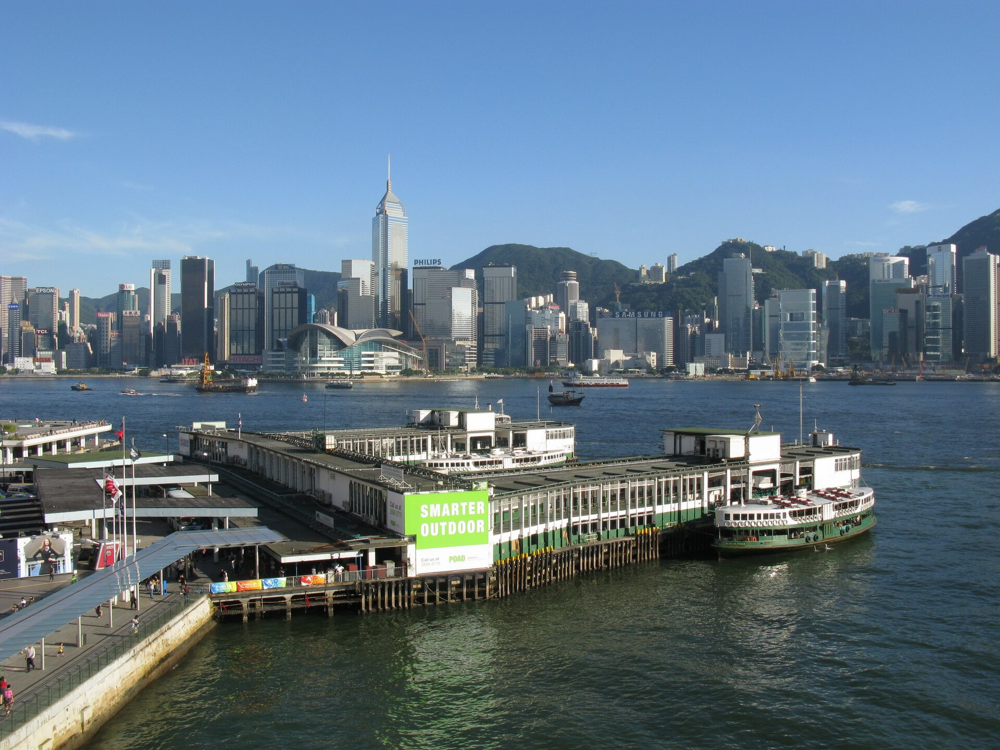
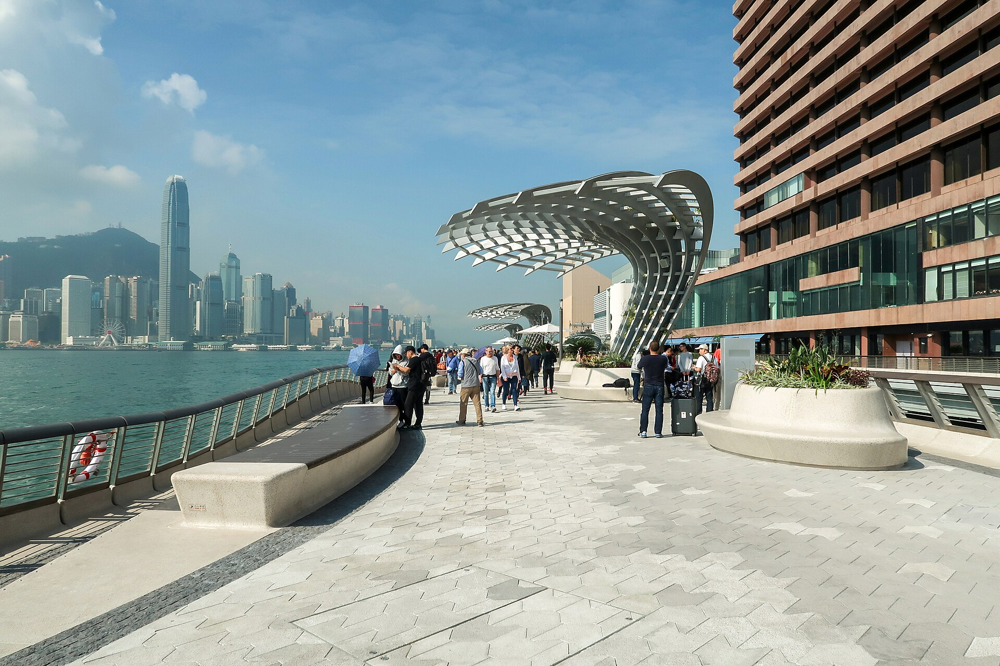

Hong Kong x India
04 · Iconic Skyline Loop
Day-one sell
Give every traveller the Hong Kong postcard first.
Open with the harbour because it photographs beautifully, orients the city, and gives the trip a cinematic first night.
01 Star Ferry across the water
02 Avenue of Stars photo stop
03 Symphony of Lights viewing window


